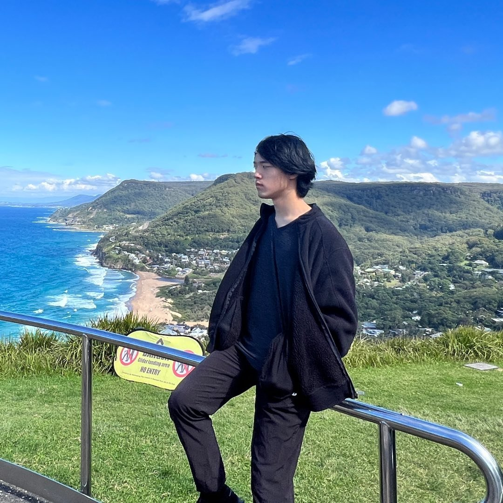

Hi, I'm Nathan 🙋♂️
I'm currently studying in my third year of Bachelor of Advanced Computer Science (Honours) student at UNSW, graduating December 2027.

About Me
My passion in Computer Science and Programming as a whole is a natural consequence of my technical hobbies and my creative urges. I first began programming by interacting with Minecraft Forge APIs in order to create Minecraft mods. Since then, I've branched out from Minecraft modding as a consequence of my studies, touching on databases, game engines, networks, web backend development, and many, many algorithms. My passion for the old game has not died however - to this day, I still work as a plugin developer for an active and popular Minecraft server in my free time.
In my spare time, I enjoy jogging, deckbuilding in Magic the Gathering, and playing Pokemon Go.